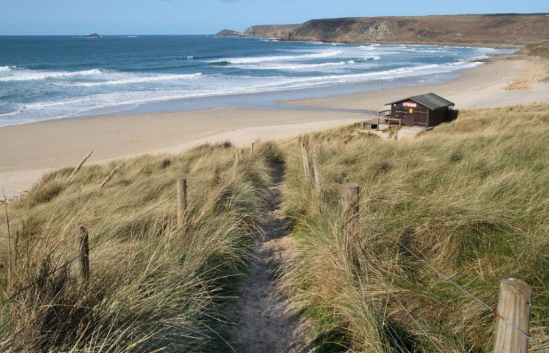
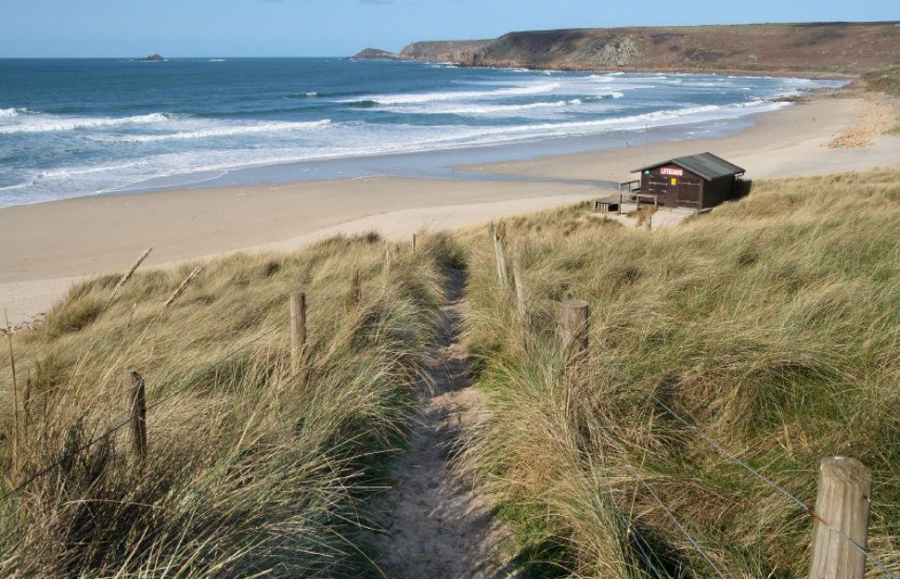

Вымышленный мир британского писателя Дж. Роулинг. Серия фантастических романов Гарри Поттер включает два разных общества: мир волшебников и мир маглов.
В романах маггловский мир - это мир, населенный немагическим большинством, с которым волшебный мир существует одновременно, хотя по большей части остается скрытым от немагических людей.
Термин «Волшебный мир» относится к глобальному волшебному сообществу, которое живет вместе с миром маглов.
Мир магглов и волшебный мир тесно переплетены. Подавляющее большинство локаций ведьм и волшебников объединены в более обширную немагическую область. Волшебники часто живут небольшими сообществами из нескольких семей в маггловских деревнях, таких как Годриковая Впадина или Тинворт в Корнуолле. Многие волшебные дома в книгах о Гарри Поттере изображены как находящиеся на окраинах городов, обычно изолированные от большей части города.
 


Точно так же Косой переулок находится в центре Лондона, недалеко от Чаринг-Кросс-роуд. Поезд под названием Хогвартс-экспресс отправляется от реальной станции Кингс-Кросс, хотя и с платформы 9¾. Эти места скрыты комбинацией отталкивающих маглов чар, иллюзий и других магических средств.
Многие из них, такие как стадион Кубка мира по квиддичу, и волшебная тюрьма Азкабан, оказываются «незабываемыми» или невозможными найти на карте. Это также подкрепляется естественной тенденцией немагических людей игнорировать все, что они не могут или объяснить.
Стадион Чемпионата мира по квиддичу и Золотой стадион — этот гигантский стадион построен специально к 422-му Чемпионату мира по квиддичу 1994 года на вересковой пустоши в Дартмуре, Англия.
Азкабан — тюрьма для нарушивших законы магического мира волшебников, охраняемая дементорами. Волшебники, нарушающие законы магического сообщества Великобритании, отбывают в ней заключение (не вполне ясно, есть ли там преступники из других стран, но такой вариант представляется вполне вероятным). Самые известные стражи тюрьмы — дементоры, подчиняющиеся Министерству магии.


Хотя сюжет вселенной Гарри Поттера разворачивается в Великобритании, есть свидетельства того, что волшебный мир имеет место по всему земному шару. Это показано в Гарри Поттер и Кубок огня, когда он присутствует многих людей на чемпионате мира по квиддичу, говорящих на иностранных языках.
Количество ирландских волшебников, работающих в различных странах, а также различных представителей разных национальностей, посещающих Шармбатон и Дурмстранг, позволяют предположить, что границы волшебного мира отличаются от геополитических подразделений мира магглов.